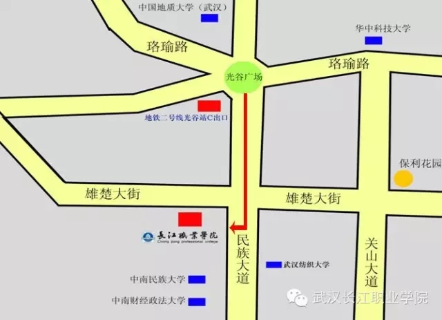
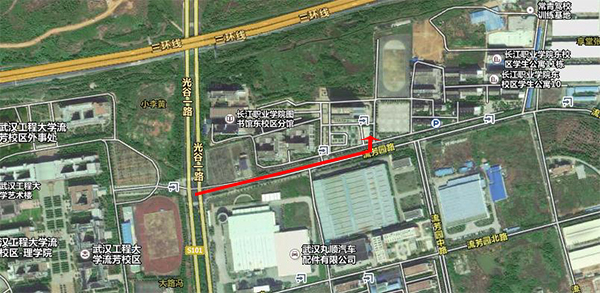
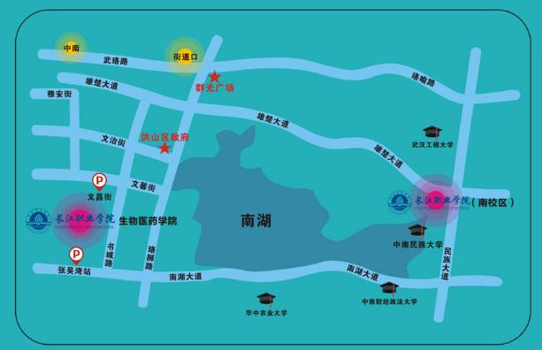

2016年新生攻略
一：2016级新生报道时间、地点
1、新生报到时间
2016年9月3日至9月5日左右，具体以录取通知书的时间为准。
2、新生报道地点
长江职业学院南校区、东校区、西校区
3、新生接待站
在迎新期间，我校在汉口、武昌、武汉火车站及付家坡、宏基长途汽车站设接待站。
二：学校方位图
南校区

东校区

西校区

三：新生报到应注意的问题
1：带齐证件和必备用品
在邮寄录取通知书时，会附带新生指南。一定要仔细阅读，最好列个清单。把需要准备的证件材料和物品一一写出，临出发前再核查是否带齐。随身现金最好分开放。一般生活用品没必要带，可以到校后再购买。
报到当天学校会有迎新生的师哥师姐，不用担心入校手续办不完。提前到校既不能提前办理报到手续，也不能提前住进宿舍，所以最好不要提前报到。
2、提前关注武汉的天气预报
在家的时候先查好报名这几天的天气情况，带好相应的防备设施。比如雨伞、雨衣或者防晒霜、防嗮衣、太阳伞。特别是女孩子，千万不要因为不适应热天气而中暑。
3、看好行李，不要埋头玩手机
新生最好到火车站专门窗口购买优惠车票或打电话预订学生票，有同学的最好结伴同行。客运站或火车站的骗子和小偷很多，事先把零钱和车票放在自己容易拿到的地方，不要到时手忙脚乱掏钱。
在车上要把行李放在可以随时看到的地方，最好放在对面行李架上。旅途中会和很多陌生人相遇，相互聊聊天可以开阔眼界，但不要把家庭地址、电话、家庭状况等私人信息告诉陌生人。否则，一些别有用心的人会利用这些信息向你的家人行骗。切记，不要喝陌生人的饮料和水。
4、警惕黑车，尽量乘坐合法车辆
学生报道携带大量行李必须打的，一些黑车车主便开始招揽生意了，贪图便宜的学生往往会选择此类车辆，但一些别有用心的车主，采用套牌车以低价骗取学生上车后，趁学生下车结账时，猛然启动车辆携带行李逃离，以骗取学生行李物品。大家小心，请尽量乘坐合法车辆。
5、提防冒牌“迎新队伍”
初到陌生城市，先去学校，不要随意游玩。新生入学师哥师姐迎接是个固定项目，当然遇到过于“热心”的可要留心。我校会在火车站和汽车站设立接待站，派专人专车迎接新生。一定要确认好迎新人员的身份，看清学校名称、校区，不要跟错队伍。
6、办手续别忙里出错
在办各项手续时，记得把行李摆放在自己视线内，或由陪送的父母看管好，防止别人拿错。骗子们往往会自称是高年级学生，或冒充老师、志愿者等身份，热情地帮忙拿行李、引导学生去寝室、帮助办手续。此时，不要图方便，将自己的学费或贵重物品交给骗子。
7、不让陌生人轻易进入寝室
到宿舍后，将行李放入衣柜锁好，宿舍没人时要锁门；贵重物品、钱包、钥匙、手机等要随身带。整理行李、来回查看附近环境等都是新生常做的事情，在这期间会有一些人，利用寝室出入人员较多、图方便不锁门的机会，潜入行窃。还有些骗子，利用学生相互之间还不熟悉，冒充同学或家长来寝室套近乎、拉家常，并趁机盗窃。
8、看好自己的财物
学费和生活费可以存入学校寄来的银行卡，尽量少带现金。开学取钱的同学比较多，要注意后面的人偷窥密码。有的人说自己没带卡，让朋友将钱打到你的卡里，让你帮助取一下，也有看起来很老实的人说不会用卡，让你教他。这些都不要信。生命第一。万一遇到抢劫，可以把手机和钱都交出去。
9、警惕各种上门推销人员
同学们要小心任何到寝室卖东西和推销东西的人，特别是对推销电话卡、购物卡、饭卡、上网卡这类，更是千万要小心，有些人用假卡或者复制卡专骗新生。
10、不要乱买东西
开学有人会推销报纸、手机卡、生活用品等东西，不要轻信到寝室推销东西的，购买生活用品，学校的超市价格比外面略高。附近有大超市的话，可以列好单子一次性去买。
11、保持电话畅通别受骗
办电话卡最好去正规营业网点，不要轻易从推销员手里购买。通讯运营商一般会在校园里摆摊设点，确认对方身份后可以考虑购买。第一时间找到辅导员的手机号、办公电话、同宿舍人的电话。换电话后及时告诉家里，电话保持畅通，免得联系不到你。骗子一般都是以学生在学校出事为借口向家长行骗。